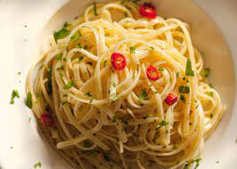

Pasta Aglio e Olio

Description
This is a simple and quick Italian Pasta recipe.
Its name can be simply translated as "Garlic and Oil," which are the main ingredients.
Ingredients
- 1/3 of a packet of Pasta (preferrably Spaghetti pasta)
- Olive Oil
- 4 to 8 Cloves of Garlic
- Chili Flakes
- Basil
- Butter (Optional)
- Parmesan Cheese (Optional)
Steps
- Boil water in a large pot, and add some salt
- Peel and mince the garlic while the water boils
- Once the water is boiling, add the pasta and let it cook for 9 to 10 minutes
- In a hot pan, add enough olive oil to coat the bottom of the pan
- In the pan, add chili flakes to taste (how hot you want the dish to be)
- Add all of the minced garlic to the pan 3 minutes before the pasta is done
- Once the pasta is done, add the pasta and some water from the pot into the pan
- Sprinkle some basil and toss around the pasta until the sauce thickens
- Serve, sprinkle some parmesan cheese and basil to taste and enjoy!